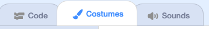
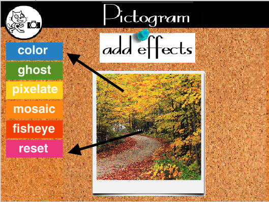
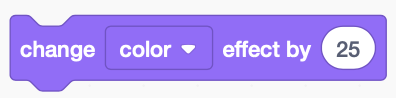
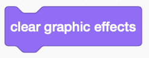
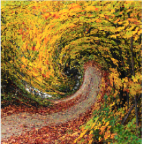
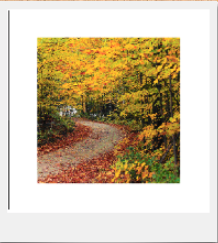

The womxn that we covered during CodeIt can loosely be categorized into three categories: entrepreneurs, researchers, and advocates. In your group, take a moment to talk about:
How would you define an entrepreneur, a researcher, or an advocate?
Take a look at the way we're sorted the womxn by clicking on the entrepreneur, researcher, or advocate sprite, and clicking the costumes tab. Do you agree with how we've classified them? Why or why not?

Are there womxn who you think would belong in multiple categories?.
Can you think of other womxn that we didn't talk about during CodeIt that would belong in one of these categories?.
First, we are going to program the color and reset functionalities.

Steps
Make the color sprite broadcast a "color" message.
Make the entrepreneur sprite change colors when it receives the message.

Make the reset sprite broadcast a reset message.
Make the entrepreneur sprite clear graphic effects when it receives the reset message.

Next, we are going to add the rest of the effects
Steps
Program the ghost, pixelate, mosaic, and fisheye sprites to broadcast messages.
Program the nature sprite to change ghost, pixelate, mosaic, and fisheye effects when it receives those messages.
Add one or more other effect buttons you want.
Examples:


Now, we are going to keep track of the number of changes made to the image
Steps
Create a new variable. Have it start with a value of zero.
Each time a button is clicked, add one to your variable.
Reset the variable to zero everytime the reset button is clicked.
Now, we are going to add the ability to switch pictures
Switch between costumes
Program a button to switch between entrepreneur costumes when clicked.
Program the entrepreneur sprite to switch costumes when clicked.
Switch between image sprites
Program the category buttons to switch between image sprites. Hint: When the researcher button is clicked, should the entrepreneur sprite be showing or hidden?
Add code to the "researcher" and "advocate" sprites to change their graphic effects. Tip: Drag the code from the entrepreneur sprite to the researcher or advocate sprite.
If you finish early, implement one or more of the following features!